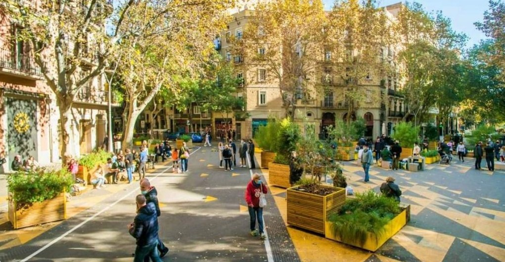
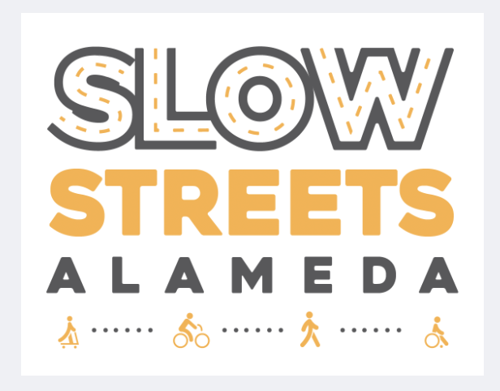
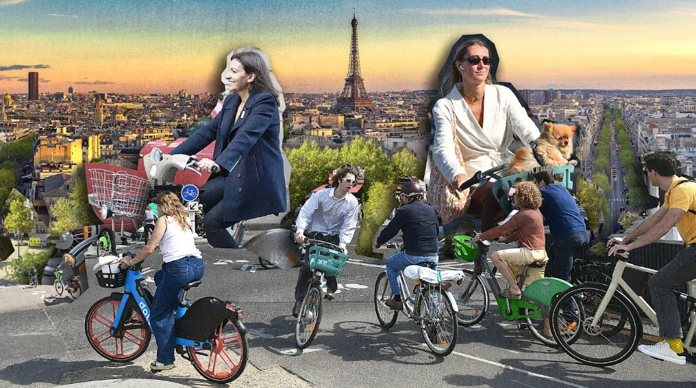
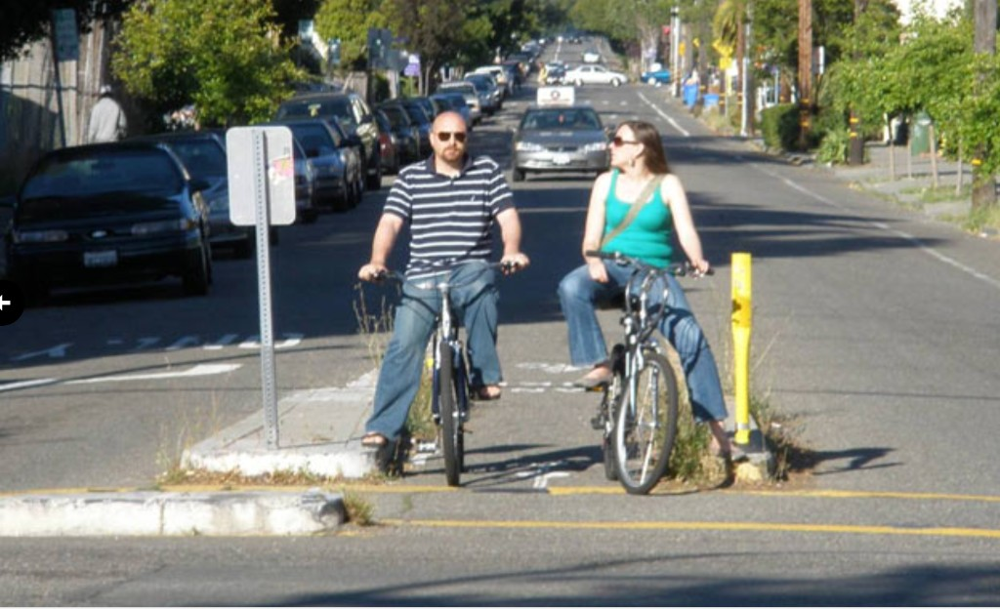
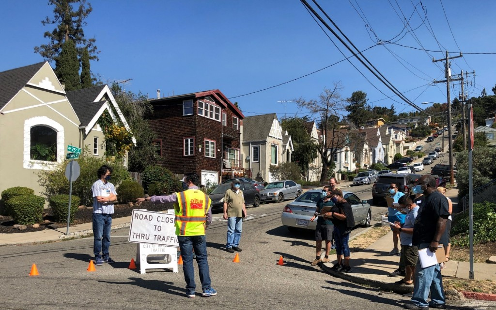

Reference Projects & Studies
Short summaries and, where applicable, what each source reports on vehicle trips or volumes.
-
The official Fehr & Peers transportation addendum (via Lamphier-Gregory, Oct. 2024, Case PLN23117) that quantifies how many additional peak-hour vehicle trips the JCC East Bay campus remodel adds to College Avenue, Chabot Road, and surrounding residential streets — and what City rules require to offset them.
The analysis puts the number at up to 338 net new a.m. peak vehicle trips on a summer camp day, and 195 / 184 a.m. and p.m. peak trips on a non-summer “typical” weekday (PDF ˜pp. 48–49, Table 5 area). When a project crosses 100 new peak-hour trips, the City’s SCA framework requires a TDM plan targeting up to 20% vehicle trip reduction (VTR).
-
Gorove Slade’s 2020 review of how nine U.S. cities — including Fremont, CA and Bellevue, WA — used turn restrictions, app-routing awareness, and area-wide programs to measurably cut non-local cut-through traffic in residential neighborhoods.
Cities in the report saw large reductions in cut-through volumes: Fremont documented 70–90% less cut-through traffic in neighborhoods with turn restrictions, plus 33% less congestion on Mission Boulevard; Bellevue saw 75–80% fewer left-turning vehicles in a tested movement. The report also examines how cities manage rerouting to adjacent streets as part of a broader area strategy.
-
(B) Barcelona superblocks (overview)

Barcelona’s superblock model clusters residential streets into people-priority cells, restricting through-motor-traffic to perimeter routes and freeing interior streets for walking, cycling, and community life. Now replicated in cities worldwide, it shows how limiting through-traffic transforms a neighborhood.
Peer-reviewed studies of early superblock pilots document large reductions in motor-vehicle exposure on interior streets alongside significant air-quality gains, including strong NO₂ reductions (and, in some studies, particulate matter) that benefit residents’ health directly.
-
A ground-level look at how Bristol used modal filters and neighborhood traffic management to transform the feel of residential streets — showing what a functioning slow neighborhood actually looks like and how residents experience the change.
Shows the street-level outcome of volume reduction: quieter roads, more people walking and cycling, and a calmer neighborhood character that residents and local advocates describe as a direct result of the LTN tools.
-
Slow Streets Alameda

One of the Bay Area’s most sustained slow-streets programs — showing how pandemic-era temporary closures evolved into council-directed policy, long-term greenways, and a community commitment to keeping streets calmer. A close peer case for how neighbor engagement and political will move from pilot to permanent.
Alameda’s program documents sustained slow-street outcomes across multiple corridors over several years — demonstrating that volume reduction, once achieved, can be maintained and expanded with community and council support.
-
Paris: a city of bikes (Fast Company)

How Paris converted car lanes to protected bike infrastructure across the city — one of the clearest modern examples of political will translating into measurable mode shift, reduced car dominance, and dramatically more people choosing to cycle.
Paris saw a large increase in cycling alongside reduced car traffic on redesigned streets — demonstrating what prioritizing people over through-traffic achieves at city scale and making the case that change, even ambitious change, is achievable.
-
(C) Treatment effectiveness (spreadsheet + LTN review)
Public spreadsheet comparing treatments on relative traffic impact and cost; peer-reviewed work evaluates low-traffic neighborhood effects in one published case. View spreadsheet.
In the compiled matrix, modal filters / diverters sit high on impact; the LTN study reports large local motor-vehicle changes in the evaluated network.
-
Berkeley’s bicycle boulevard design guidelines, covering the Hillegass Avenue route where diverters keep traffic volumes low enough to support comfortable cycling. The same street crosses into Oakland a few blocks south — where, without the same tools, volumes are measurably higher (see footnote 9).
The guidelines use under 2,000 vehicles per day as a design threshold for some treatments — and Telraam counts on both sides of the border (footnote 9) show the real-world volume difference that Berkeley’s diverters create on the same street.
-
NACTO: Channing Way diverter, Berkeley

NACTO’s case study of how a single diverter on Channing Way, just blocks from Lower Rockridge, eliminated cut-through motor traffic while keeping the street fully open for cyclists crossing Martin Luther King Jr. Boulevard — with loop detectors to protect bike priority at the intersection.
One well-placed diverter removed cut-through motor traffic entirely from Channing Way while improving safety and access for people on bikes — a directly adjacent example of the kind of intervention being requested for the trapezoid.
-
OakDOT’s own three-week Oct.–Nov. 2024 pilot near East Oakland Pride Elementary — Oakland’s measured, published test of a traffic filter and one-way pattern, with full before/after data by street leg. Proof that the City knows how to run these interventions and measure the results.
The city’s Dec. 2024 summary (three-week pilot) reports large before/after volume changes by leg — e.g. on the order of ~65–75% in some Plymouth directions, large drops on 81st (the deck quotes about ~70% eastbound for one 81st leg in its “meeting our goals” section), and ~22–28% higher daily vehicle counts on 82nd with discussion of cut-through shifting routes. It also cites about a 4.3 mph 85th-percentile speed drop in a school-adjacent segment. See the PDF for exact legs and time windows.
-
Ney Avenue traffic-calming study (memo)

An OakDOT-commissioned study of a Fruitvale-area neighborhood facing the same problems as Lower Rockridge — cut-through traffic, high volumes, and speeding on residential streets. The memo recommends exactly the kind of engineered tools this neighborhood is requesting, and shows Oakland knows how to authorize and deploy them.
The study explicitly calls for measures to reduce volume, cut-through traffic, and speeding on residential streets, and Table 2 catalogs specific volume-reduction tools — diverters, turn restrictions, and related treatments — that OakDOT has the expertise and precedent to implement.